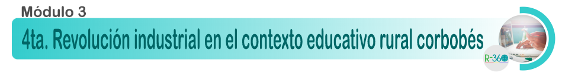
Ova diplomado 1
Módulo 3. 4RI en Educación Rural
Bienvenidos al tercer modulo donde se Reflexiona sobre las posibilidades de las TIC y las didácticas emergentes como aporte a una visión innovadora conjunta del futuro de la educación en el contexto rural.
Este modulo consta de 4 semanas de aprendizaje.
En la primera semana hablaremos sobre los retos de la cuarta revolución Industrial.
En la segunda semana, hablaremos sobre el internet de las cosas y su importancia en la cuarta revolución industrial.
En la tercera semana hablaremos sobre la realidad virtual y aumentada, y cómo esta tecnología puede impactar positivamente en la innovación educativa.
Por último, en la cuarta semana estaremos hablando sobre la robótica educativa y su impacto en el aprendizaje.
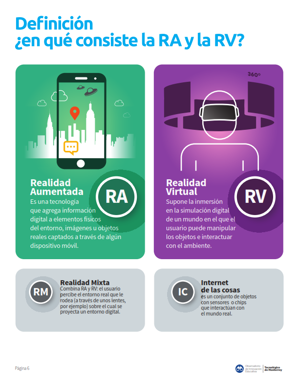
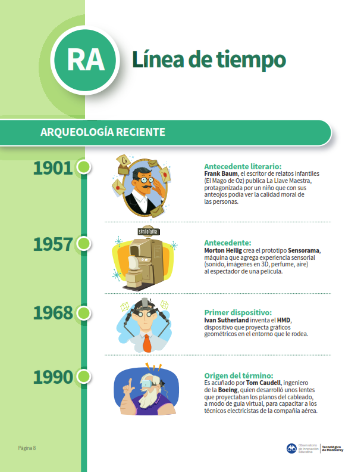
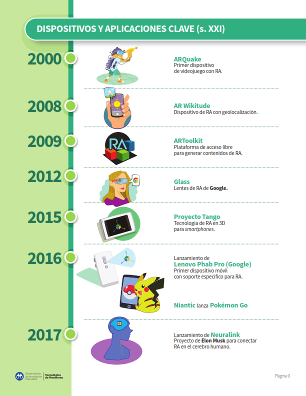
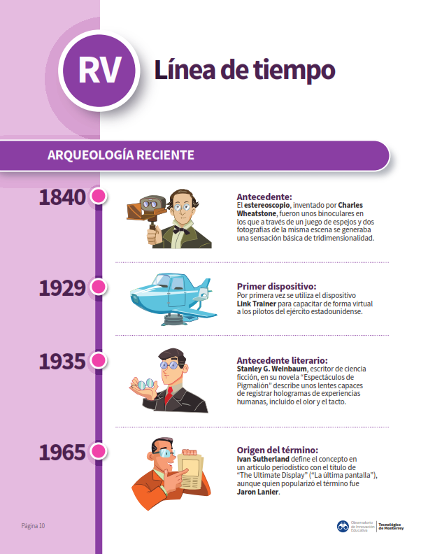
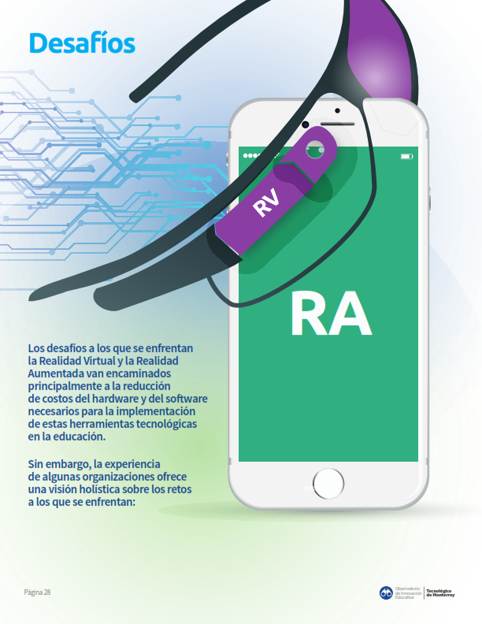
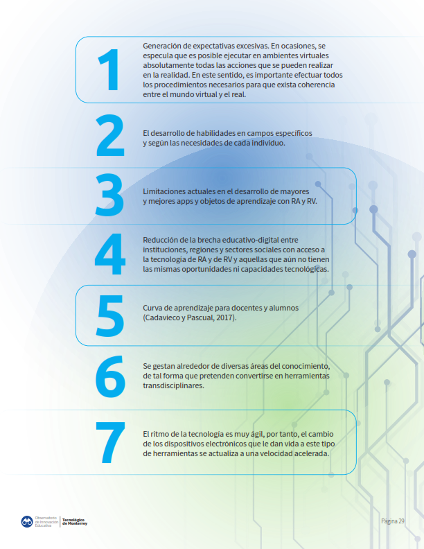
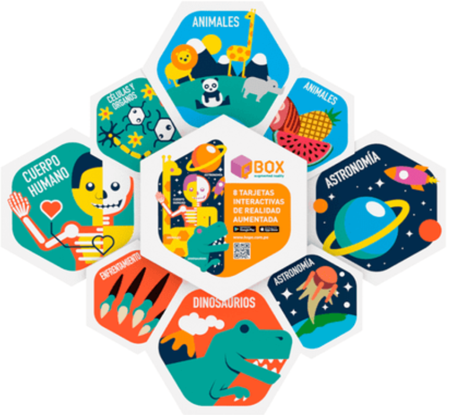
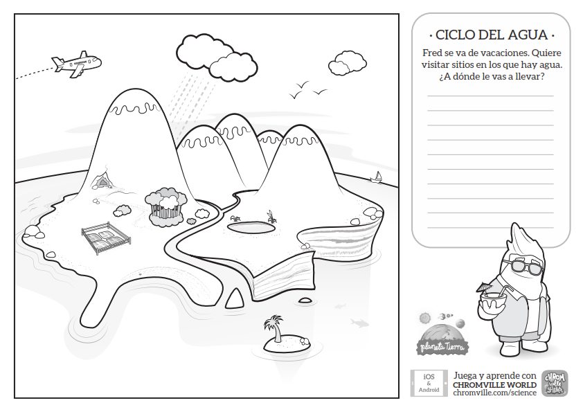
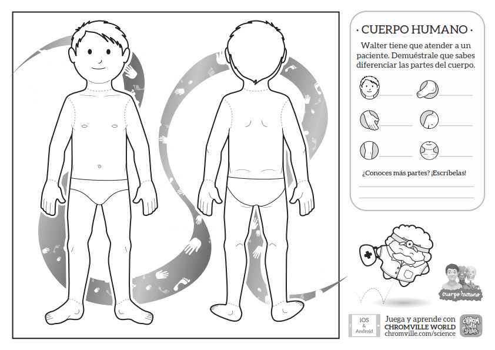
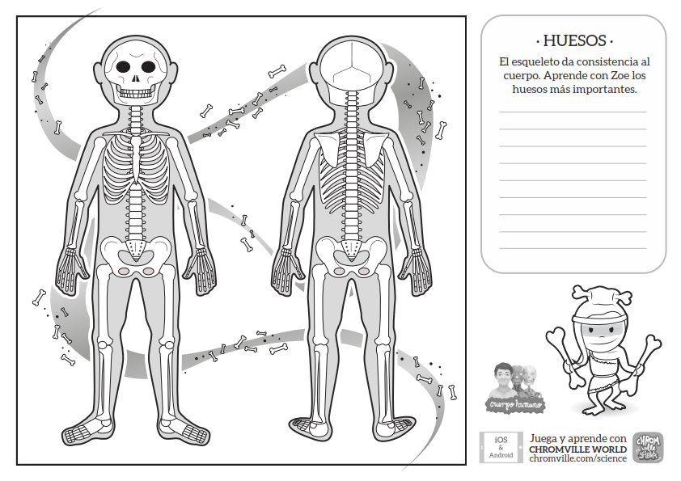
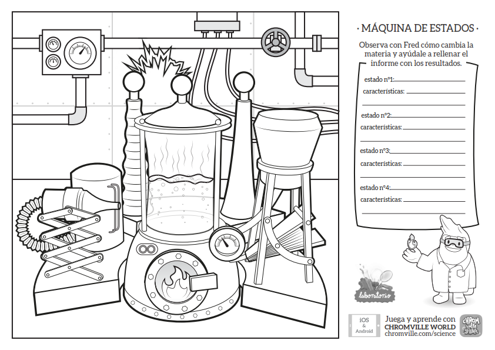
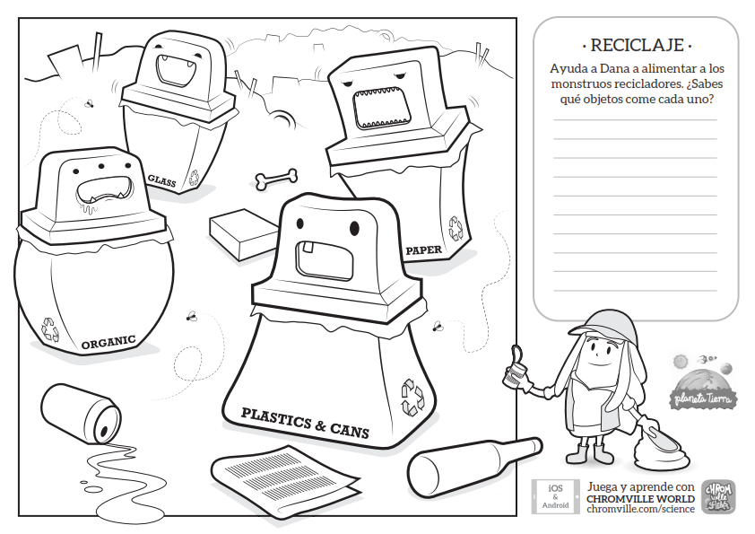
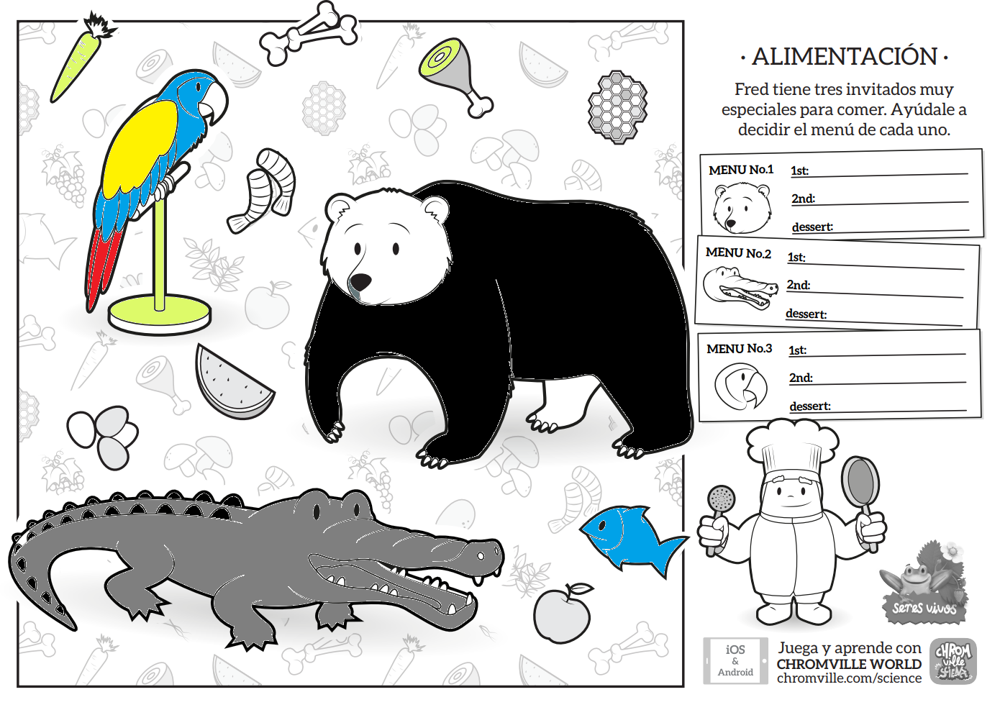
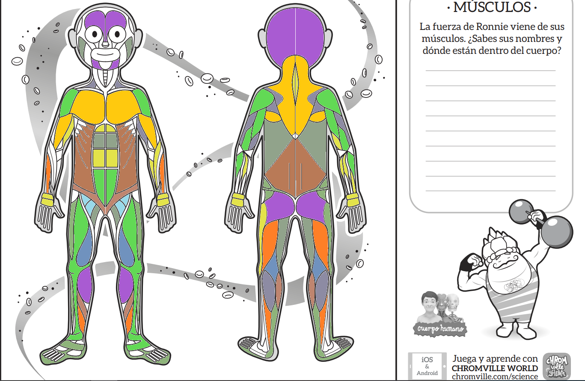
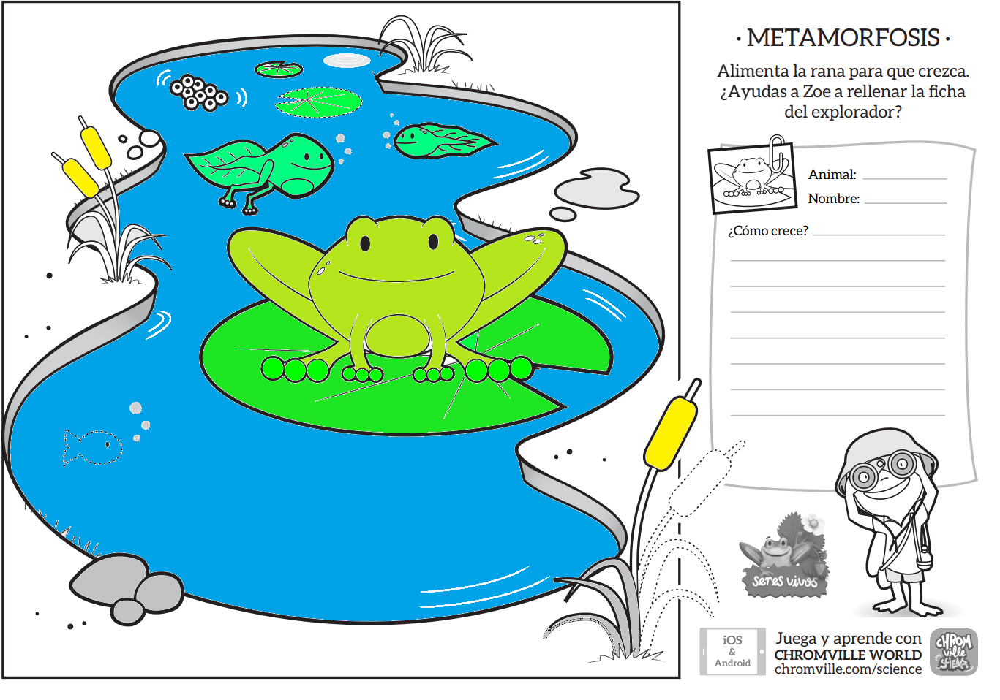
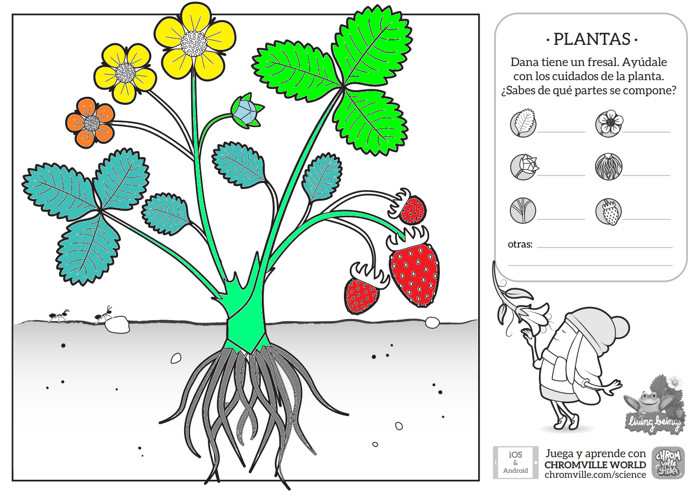
Obra publicada con Licencia Creative Commons Reconocimiento Compartir igual 4.0